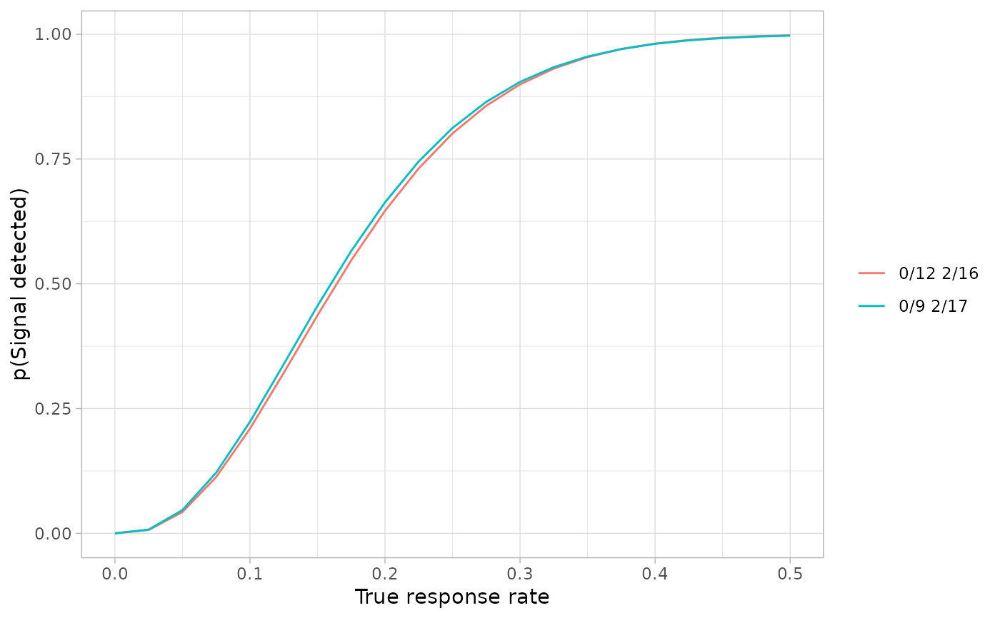

Plot the power curve(s) for the given design(s)
Usage
powerPlot(grid, probs = seq(0, 1, 0.01))Examples
createGrid(p0 = 0.05, p1 = 0.25, alpha = 0.05, beta = 0.2, mander = FALSE) %>%
augmentGrid(cores = 2) %>%
obtainDesign() %>%
powerPlot(probs = seq(0, 0.5, 0.025))
#> Warning: one argument not used by format 'Parallelisation has been requested, but the grid size [72814] is less than the minimum chunk size [1e+05]. Parallelisation will not occur'
#> pkgdown 2024-11-01 13:52:51 INFO pkgdown::build_site: Parallelisation has been requested, but the grid size [72814] is less than the minimum chunk size [1e+05]. Parallelisation will not occur
